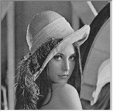
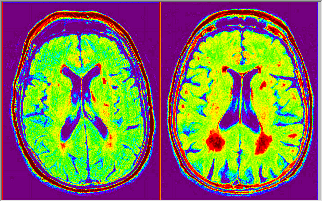

Allgemein beinhaltet die Bildkonvertierung das Konvertieren eines Farbbildes in ein Graustufen- oder Schwarzweißbild, Trennen und Zusammenfügen der RGB-Farbkanäle und Verwenden der Farbpalette, um Pseudofarbe auf ein Graustufenbild anzuwenden.
Wenn die Intensität eines Farbbilds das einzig Interessante ist, ist es nützlich, das Farbbild in ein graustufiges umzuwandeln, um die Komplexität der Berechnung zu verringern. Außerdem können einige Eingabe-/Ausgabegeräte wie monochrome Drucker oder Displays nur mit graustufigen Bildern arbeiten. In diesem Fall ist das Konvertieren von Farbe zu Graustufe notwendig.
Ein Farbbild in Graustufen umwandeln
| Ursprüngliches Bild | Graustufiges Bild |
|---|---|
|
 |
Ein graustufiges Bild kann auf eine Farbpalette abgebildet werden. Pseudofarbe fügt keine zusätzlichen Informationen zum Originalbild hinzu. Sie hilft allerdings, einige Details für das menschliche Auge besser sichtbar zu machen. Sie wird weithin verwendet, um Sensorbilder zu sichten wie Satellitenbilder und Magnetresonanzabbildungen.
| Ursprüngliches Bild | Bild mit einer Palette |
|---|---|
|  |
Eine Farbpalette auf ein graustufiges Bild abbilden
ODER
cvPalette -d;
im Befehlsfenster (Fenster: Befehlsfenster oder Shift+ALT+3) aus, um den Dialog cvPalette zu öffnen.
|
Sie können auf die Schaltfläche Palette revidieren |
Ein Farbbild kann in seine einzelnen Farbkanäle (Rot, Grün, Blau) aufgeteilt werden. So können Sie die Kanäle einzeln bearbeiten und anschließend wieder zu einem neuen Farbbild zusammenfügen. Diese Funktion ist besonders dann nützlich, wenn sich das Objekt, das Sie bearbeiten möchten, nur in einem Kanal befindet bzw. einfach aus einem Kanal extrahiert werden kann.
Farbbild in RGB-Kanäle aufteilen
RGB-Kanäle zusammenfügen, um ein Farbbild zu rekonstruieren
| Hinweis: Das Bild wird aufgeteilt/zusammengefügt in der Kanalreihenfolge, die Sie hier festlegen. Eine unterschiedliche Reihenfolge führt zu unterschiedlichen Ergebnissen. |